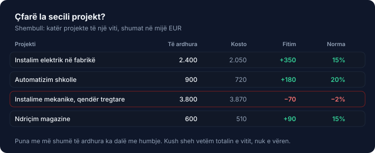
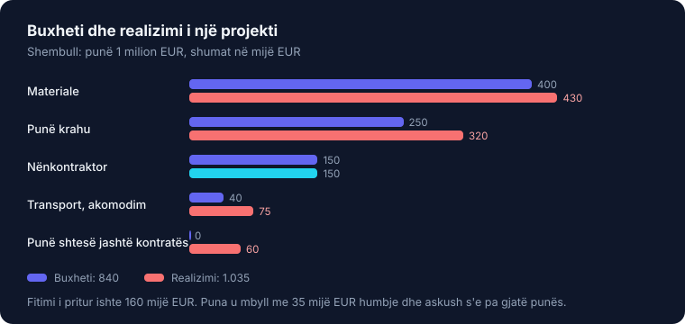

Si matet përfitueshmëria e projektit? Ta shohësh gjatë punës, jo kur mbaron
Te kompanitë që punojnë me projekte, fitimi shpesh mësohet një herë në vit. Kontabilisti nxjerr bilancin dhe del sa ka fituar kompania atë vit. Por cili projekt solli fitim dhe cili doli me humbje, në atë pasqyrë nuk duket. Në këtë artikull shpjegojmë pse përfitueshmëria e projektit nuk matet dot dhe çfarë duhet regjistruar për ta matur.

Çfarë fsheh fitimi i përgjithshëm?
Nëse në fund të vitit kompania ka dalë me fitim, të gjithë qetësohen. Por brenda atij totali, punët që sollën fitim të mirë dhe punët me humbje mund ta kenë mbuluar njëra-tjetrën. Në shembullin më poshtë kompania e mbyll vitin me fitim, por projekti i saj më i madh ka dalë me humbje.

Kompania që nuk e sheh këtë tabelë, vitin tjetër jep ofertë me të njëjtin çmim për një punë të madhe të të njëjtit lloj. Të rritesh pa ditur se cili lloj pune, cili klient dhe cili ekip sjell para, do të thotë të rritësh edhe punën që del me humbje.
Pse kostoja nuk i ngarkohet projektit?
Në shumicën e kompanive shpenzimi regjistrohet; ajo që mungon është se cilit projekt i përket. Kuponi i karburantit hyn në kontabilitet si „shpenzim automjeti“. Fatura e hotelit pranë kantierit bëhet „akomodim“. Kablloja e blerë te shitësi me shumicë shkruhet te llogaria „materiale“. Të gjitha janë në llogarinë e duhur, por ka humbur informacioni se për cilën punë u shpenzuan.
Te puna e krahut gjendja është më e vështirë. Një ekip punon brenda javës në dy kantiere të ndryshme, ndërsa paga i paguhet në fund të muajit si një zë i vetëm. Përgjigjja e pyetjes se kush sa ditë punoi në cilin projekt është në fletoren e pranisë, nëse ka të tillë.
Janë edhe punët shtesë që nuk faturohen. Klienti thotë në terren „ta shtrijmë një linjë edhe këtu“ dhe ekipi e shtrin. Kjo punë nuk është në kontratë, askush nuk lajmëron zyrën, materiali dhe puna hyjnë në koston e projektit, por fatura nuk lëshohet kurrë.
Çfarë duhet regjistruar për ta matur?
Për të parë përfitueshmërinë e projektit nuk duhet ndonjë llogaritje e ndërlikuar. Mjafton të mbahen rregullisht katër gjëra.
Një buxhet në fillim të projektit
Kur përgatitni ofertën, gjithsesi bëni një llogaritje të kostos. Ruajeni atë zë për zë: materiale, punë krahu, nënkontraktor, transport dhe akomodim. Që të dihet me çfarë do ta krahasoni kur të mbarojë puna.
Kodi i projektit në çdo shpenzim
Qoftë porosi blerjeje, kupon shpenzimi apo faturë nënkontraktori, kur futet zgjidhet se cilit projekt i përket. Kur kjo fushë e vetme bëhet e detyrueshme, gjysma e punës është zgjidhur.
Kush, në cilin projekt, sa orë
Një evidencë e thjeshtë pune, ditore ose javore. Përgjegjësi i ekipit shënon në mbrëmje nga telefoni se kush ishte atë ditë në cilin kantier. Nuk duhet saktësi me minuta; për shumicën e kompanive mjafton informacioni me gjysmë dite.
Evidencë më vete për punët shtesë
Çdo kërkesë jashtë kontratës, para se të bëhet, i njoftohet zyrës me një shënim të shkurtër dhe i jepet klientit për miratim. Kështu edhe faturohet, edhe nuk e prish buxhetin bazë të projektit.

Ta shohësh ndërsa puna vazhdon
Llogaritja e përfitueshmërisë pasi mbaron puna vlen për ofertën e radhës. Dobia e vërtetë është ta shohësh ndërsa puna vazhdon. Nëse është shpenzuar tetëdhjetë për qind e buxhetit të punës së krahut, por gjysma e punës ka mbetur, ka shumë dallim mes ta dish këtë në javën e tretë dhe ta mësosh pas dorëzimit.
Kur e shihni herët, keni zgjedhje. Mund të ndryshoni ekipin, të flisni me klientin për çmimin e punëve shtesë, të kaloni te një material alternativ. Pasi mbaron puna, e vetmja gjë që mund të bëhet është të pranohet humbja.
Për këtë mjafton një ekran i vetëm që shihet një herë në javë: për çdo projekt buxheti, shpenzimi deri sot dhe përqindja e përfundimit të punës.
A nuk e bëjmë dot këtë në Excel?
Për një projekt bëhet, dhe ka kompani që e bëjnë. Vështirësia është te mbledhja e të dhënave. Blerjet janë në një vend, kuponët e shpenzimeve në një tjetër, prania në fletore, faturat në programin e kontabilitetit. Dikush duhet t'i kalojë të gjitha me dorë në një tabelë çdo javë. Kjo punë zakonisht lihet në muajin e dytë.
Ndihma e softuerit këtu nuk është llogaritja, por kapja e të dhënave në burim. Projekti zgjidhet kur futet porosia e blerjes, kur fotografohet kuponi i shpenzimit nga telefoni, kur futen orët e punës. Për raportin nuk duhet punë më vete; regjistrimet mblidhen vetvetiu nën projektin.
Mjetet që e bëjnë këtë janë të ndryshme: sisteme ERP me modul projektesh, programe të posaçme për kontabilitetin e projekteve, zgjidhje të zhvilluara sipas kompanisë. Zgjedhja varet nga vendi ku mbahen sot blerjet dhe kontabiliteti. Ne parapëlqejmë të shtojmë mbi rregullin ekzistues, pa e prishur.
Pyetje të shpeshta
Si do t'i shpërndajmë shpenzimet e përgjithshme nëpër projekte?
Në fillim mos i shpërndani. Së pari ngarkojini projektit shpenzimet e drejtpërdrejta (materiale, punë krahu, nënkontraktor, transport). Shpenzime si qiraja dhe personeli i zyrës mund të shtohen më vonë me një normë të thjeshtë. Në shumicën e kompanive, edhe vetëm shpenzimet e drejtpërdrejta mjaftojnë për ta ndryshuar pamjen.
A nuk e bën tashmë këtë kontabilisti ynë?
Kontabilisti mban librat ligjorë dhe bën atë që është e saktë nga ana tatimore. Përfitueshmëria sipas projektit nuk është detyrim ligjor, prandaj nuk është pjesë e punës së tij. Kjo është një evidencë që kompania e mban për drejtimin e vet.
Po nëse ekipi nuk do t'i fusë orët?
Mos kërkoni që t'i fusë secili më vete. Mjafton që përgjegjësi i ekipit të shënojë një herë në ditë se kush në cilën punë ishte; kjo pranohet shumë më lehtë.
Shërbimet tona të lidhura: ERP për kompani inxhinierike dhe kontraktuese, zgjidhje ERP për biznese të vogla e të mesme.
Llogaritni fitimin real të një pune
Futni vlerën e ofertës dhe shpenzimet; shikoni krah për krah fitimin e dukshëm dhe fitimin real me orët e ekipit.
Hap kalkulatorinCila punë po ju sjell fitim?
Le të nxjerrim bashkë buxhetin dhe realizimin e një projekti tuaj.
Le të flasim për projektin tuaj